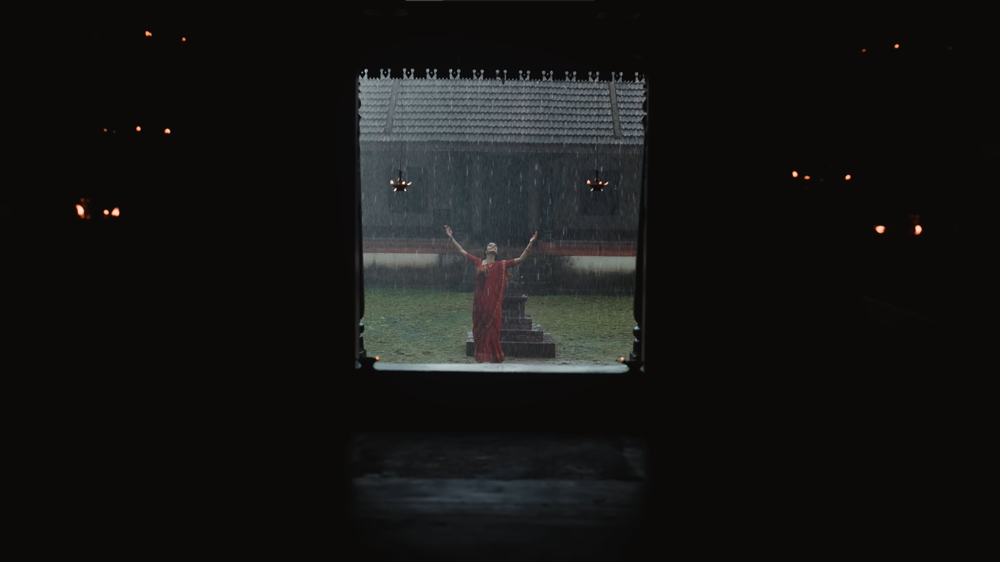
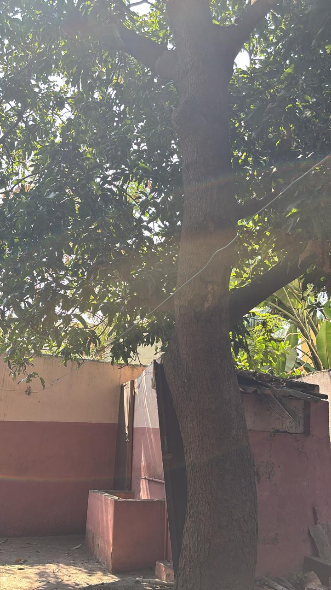

Aravind Ramachandran

1. Tulasi
This one caught me quite emotional little too much, the song, the lyrics, cinematography, direction, editing and the overall concept was quite surreal. This song was written by a 14th century scholar and musician "Purandara Dasa". He was also one of the chief founding proponents that shaped modern Carnatic music.
Am neither an atheist nor an orthodox extremist, but I have a strong belief in the idea of alignment of the universe with the human body and soul, this song gave me one such experience. The song is about lord Krishna, I cried listening to this song out of love, happiness, peace and a sense of weighed down, this moment I experienced the divinity, the so called bakthi I felt well aligned, mindful and had a hope to move further. Music has always played a major role for me and this is one such peak life experience to cherish.

2: Relationship with food:
I was trying to "FIX" my body through strict diet plans, workout schedules, workout tracker apps, steps counter and what not, but lately I've understood that its very important to build a relationship with food. During a point of a time I used to get pissed off how fat I am, to control the temper I'd binge eat after work sitting by myself in my office with YouTube/Netflix on. I was treating food like a prostitute, pardon me but that's the fact. Binge eating used to be my version of self gratification with food, that put me in the triple digit KG club.
Been a while I quit my job, to live with my grandparents and prepare for my CA exams. This is my rehab phase, first step I took was lowering my cortisol levels and fixing the attention span, its been like a couple of months here and still am trying. No rush, no nothing and I've officially dumped the sense of time. The conspiracy theories start to make sense as I'm getting exposed to the sun early and in the evenings, completely eliminating seed oils and limiting junk food.
3: Toxic summers
There were times around last winter, I was desperately craving for a sharp summer heat to slam my back, I realized winter is not my thing. But now the summer got quite toxic and something's bad and kind of a SUS in climate change. I wonder how did I pass the time during my summer holidays in late 2000s & early 2010s with no YouTube or netflix. There was a TV and my grand fathers books (Mostly railway directories).

4: The 'neo-luddites':
A word unlocked to which I would keep coming back again, again and again. The AI hater gangs getting wilder and wilder with the upscale of AI. I spent 2.2k rupees on the claude subscription and GOD knows what kind of magic I've been doing since then. The AI's surface is kinda "mindlocked" to many, glad am ahead somehow.